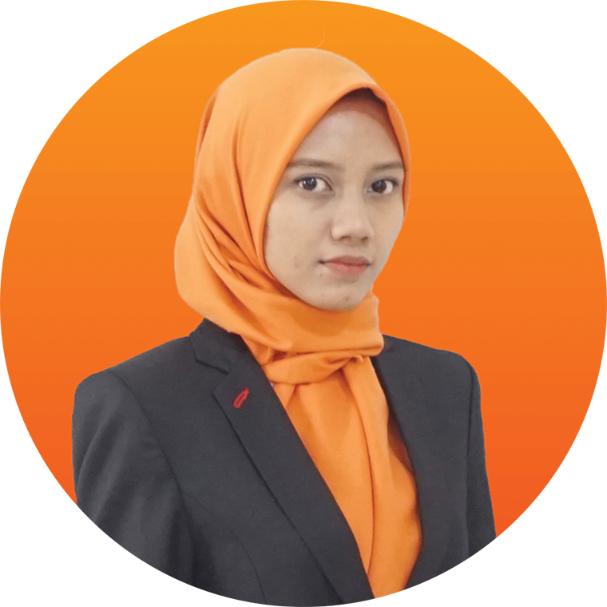

Kaprog TJKT
Sopan Sopari, M.Kom

Kaprog PPLG
Adeline Afigar, A.Md

Kaprog DKV
Cahyoko Triharsatmo, S.Ds
Kaprog BC
Dwi Yuliasari, S.Sn.
If Better Is Possible Good Is not Enough
Pemodelan Perangkat Lunak & GIM
Pemodelan Perangkat Lunak & GIM
Pemodelan Perangkat Lunak & GIM
Pemodelan Perangkat Lunak & GIM
Kelas
Siswa Pertahun
Melanjutkan Bekerja
Melanjutkan PTN/Kedinasan
Hendri Kurniawan, S.Kom, M.I.Kom.
Keunggulan Kami Berpikir kritis (critical thinking) merupakan kemampuan untuk memahami sebuah masalah yang rumit, mengkoneksikan informasi satu dengan informasi lain, sehingga akan muncul berbagai perspektif, dan menemukan solusi dari suatu permasalahan.
Kolaborasi adalah kemampuan untuk bekerja sama, saling bersinergi, beradaptasi dalam berbagai peran dan tanggung jawab, bekerja secara produktif dengan yang lain, menempatkan empati pada tempatnya, dan menghormati perspektif berbeda.
Communication (Komunikasi) adalah kegiatan mentransfer informasi, baik secara lisan maupun tulisan. Komunikasi merupakan hal penting dalam peradaban manusia.
Creativity (Kreatifitas) Merupakan kemampuan untuk mengembangkan, melaksanakan, dan menyampaikan gagasan-gagasan baru kepada yang lain, bersikap terbuka dan responsif terhadap perspektif baru dan berbeda.
Sopan Sopari, M.Kom
Adeline Afigar, A.Md
Cahyoko Triharsatmo, S.Ds
Dwi Yuliasari, S.Sn.
Mewujudkan lulusan yang “unggul” dan “terpercaya” dalam mengembangkan dan mempersiapkan tenaga terampil di Bidang Teknologi Informasi dan Komunikasi yang Beriman, Bertakwa, Cerdas, Percaya Diri, Berwawasan Global, dan Berkarakter Pancasilais.
Menyelenggarakan proses belajar mengajar yang berkualitasdalam mencapai kompetensi peserta didik yang berstandar nasional dan bertaraf internasional dengan Pendekatan Mutu Terpadu atau SMM ISO 9001-2008.
Menyiapkan tamatan yang mampu berkompetisi pada revolusi industri 4.0 dan era globalisasi sesuai dengan kompetensi yang dimiliki dalam bidang : Pemodelan Perangkat Lunak & Gim (PPLG), Teknik Jaringan Komputer & Telekomunikasi (TJKT), DKV (DesaIn Komunikasi Visual), dan Broadcasting (BC).
Memberikan pelayanan pendidikan berbasis pembelajaran abad 21 agar peserta didik menguasai ilmu pengatahuan dan teknologi.